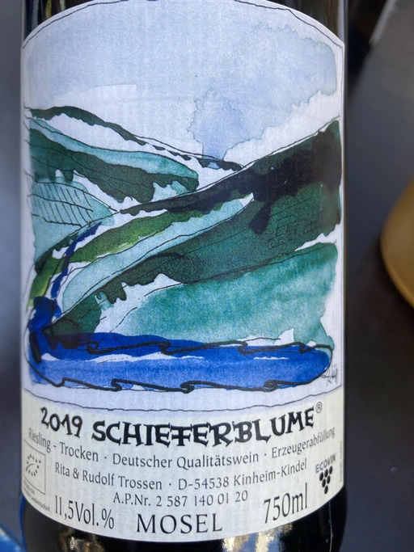

- Type
- White Still, Dry
- Producer
- Rita & Rudolf Trossen
- Vintage
- 2019
- Location
- Germany, Mosel
- Grapes
- Riesling
- Alcohol
- 11.5
- Sugar
- 5
- Price
- 630 UAH
- Cellar
- N/A
Ratings
2021-05-21 - 7.25
Pleasant fruit-forward bouquet with apples, citrus, and pebbles. Fresh, but dull and almost off-dry.